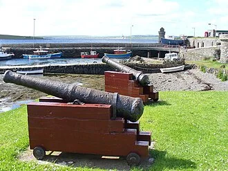
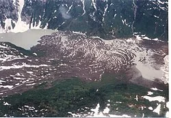
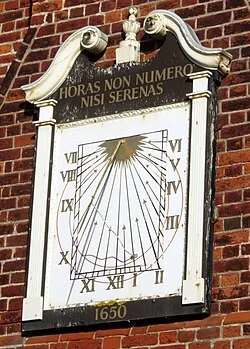
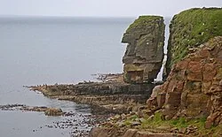

WikiRNG Daily Draw
Play WikiRNG free online. Take a quiz and collect a real Wikipedia article card.
Today · UTCNew draw at 00:00 UTC
WikiRNG Field Collection
- Rarity
- Topic
- Pageviews
- Drawn
Your draw score
pts
How you earned your points
The WikiRNG field guide
One question leads to one real Wikipedia article. Use WikiRNG to collect the card, follow its source, or explore the article pool while you wait for tomorrow’s draw.
How the daily Wikipedia card draw works
Open WikiRNG and choose Start Today’s Quiz. Pick one answer and the card flips to reveal the article you drew. A correct answer gives you a chance at all five tiers. A wrong answer still earns a Silver or Bronze card, and the reveal shows you the correct answer.
Every WikiRNG card starts with a short excerpt. The front also shows the subject, rarity and UTC draw time. When licensed photographs or maps are available, they appear around the card. Select an image to see the original file, or open the article to read the full story beyond the excerpt.
There’s one daily draw per UTC date in this browser. The timer counts down to midnight UTC. You can close the tab and return before the reset to look at the same result, compare its badges or share the discovery.
Say WikiRNG reveals Shapinsay. The harbour photograph introduces the island from the water. The article explains where it sits among the Orkney Islands and why its natural harbour matters. In the October edition, this WikiRNG card is Silver with 382 pageviews.
Go to Daily Draw
WikiRNG rarity tiers and daily odds
The buttons show odds after a correct answer. With an incorrect answer, the odds are 20% Silver and 80% Bronze. Select a tier to compare both sets of odds and see its range of English Wikipedia pageviews.
The daily draw first selects a tier, then draws one article from that tier.
What makes a WikiRNG card rare?
WikiRNG ranks English Wikipedia articles by their total pageviews over the same complete calendar month. The least viewed articles in the eligible deck go into the rarer tiers, and the more viewed articles go toward Bronze. An article needs a complete month of data to qualify. You can still read entries with unavailable data in the article pool.
WikiRNG uses your answer to determine which tiers are available for your daily draw. The game picks a tier according to its odds, then every article within that tier has the same chance of appearing. If two articles have the same number of views, the lower Wikipedia page ID sorts first when the deck is built.
Pageviews count views of a page during the window. Someone can open a page more than once. The number describes readership for that period, so a WikiRNG article can move between tiers in a later edition. Check the month beside the figure when comparing two cards.
For example, WikiRNG lists The Volcano in British Columbia at 200 views in the same edition. It’s a small cinder cone near Lava Fork, and its card earns 271 points. Both it and Shapinsay are Silver, even though Shapinsay has more views and fewer points. The WikiRNG score rewards article traits within the deck.
Browse article pageviews
Build your personal card collection
The WikiRNG Achievements page keeps track of the cards you’ve unlocked. A locked slot shows its rarity and card number. Once you draw that article in the daily game, the slot shows its name and lets you open its details. Use the status buttons to see only locked or unlocked cards, or select a rarity to focus on a single tier.
A repeat draw still counts as a discovery for that day. It won’t fill a second WikiRNG slot for the same article. The number of unique cards can therefore be lower than the number of daily draws. Older cards that sit outside the current deck appear as archived discoveries.
To find a particular WikiRNG achievement, first try the Unlocked filter. It brings your discoveries to the front in date order. Use All cards again to see everything, or choose Locked to check what’s still missing without seeing the article titles in those slots.
WikiRNG achievements belong to this browser profile. There’s no sign-up, and your collection opens directly from the game. If you want to show someone an interesting find, use Share result on the card. It sends the result you choose while your collection stays local.
Open Achievements
Explore the article pool while you wait
Open the WikiRNG Article Pool to look through the edition by topic. Choose Earth to explore landforms and islands, or switch to Space & science for a different set of articles. The list shows each entry’s title, rarity tier and recorded pageviews.
Browsing the WikiRNG pool leaves your daily card in place. You can look at more than one topic, compare how often two articles were viewed, or open the article that interests you directly on Wikipedia. Each topic has a paginated list so you can work through it at your own pace.
After you’ve drawn your card for the day, select Draw again to see how long remains before your next opportunity. Your existing card stays available to read or share. To revisit an earlier discovery, open Achievements and filter by Unlocked instead of searching the full deck again.
Explore the Article Pool
WikiRNG FAQs
Where do the WikiRNG articles come from?
The deck samples English Wikipedia’s featured articles across several subjects. The WikiRNG article pool shows what’s in the current edition. Each card links to its source article, and the credit line links to the excerpt’s Wikipedia revision when available. The sample is much smaller than English Wikipedia itself.
How does my WikiRNG answer affect the draw?
A correct answer gives you a chance at Crown, Diamond, Gold, Silver or Bronze. An incorrect answer still earns a card, with 20% odds for Silver and 80% for Bronze. The points shown below your card come from article traits such as coordinates.
What happens if I draw a card I already own?
WikiRNG saves the new daily result, including its draw time. The existing achievement stays unlocked. The collection count tracks different articles, while the discoveries count tracks completed days in this browser.
Can I draw another WikiRNG card today?
WikiRNG offers one draw per UTC day in this browser. Once you submit an answer, your card is saved for the day. The next opportunity arrives at 00:00 UTC, and you can check the countdown any time by selecting Draw again.
What if an article has no photos?
You still get the summary, rarity, points and source link. The available illustrations depend on the article and file permissions. Some cards include maps or diagrams, and others may have no suitable media or a temporary loading problem.
Will my WikiRNG achievements follow me to a new device?
The collection uses local storage. A different browser, device or profile starts a separate collection. Clearing site data removes the saved draws for that profile. A private browsing session can discard them when it closes.
When can I take the next WikiRNG quiz?
The next question unlocks at 00:00 UTC. Use the countdown near your card if your local evening or morning falls on a different calendar day than UTC. You can browse the pool or your unlocked cards while you wait.
What does a locked Crown slot tell me?
The slot tells you there’s a Crown card left to discover. Selecting Crown in the WikiRNG rarity panel shows the odds and the pageview range for that tier. Use the Achievements filter to check whether your browser has already saved it. A correct answer is required for a chance at Crown.
Card achievements
See the cards you’ve unlocked and the ones still waiting in the deck.
Article pool
Inspect the archived Wikipedia edition used for daily draws.
English Wikipedia featured article index ·
How to play
A few rules for your daily discovery.
How often can I draw?
Submit one answer per UTC day to draw a card. A correct answer opens all five tiers. An incorrect answer earns a Silver or Bronze card. Compare the rarity odds.
How are points earned?
Every article starts at 100 points. Traits in the edition earn badges. Only the highest-scoring badge counts in each of the topic, title and article metadata groups. Rarity follows pageviews.
What does “top of the pool” mean?
It compares article scores in the edition, including ties. The score shows how unusual the article’s badge traits are within this edition.
Where are my discoveries saved?
Daily results stay in this browser’s local storage. Clearing site data or switching browsers separates your journal. Share result lets you export just the selected card and its links.
Where do the discoveries come from?
This edition is a sample from the English Wikipedia featured article index, with excerpts and metadata from Wikipedia. Each result shows its source and edition. Older draws keep the score and size of their original pool. Browse the current pool.